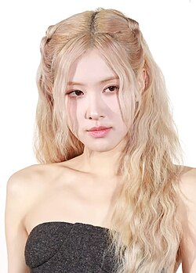
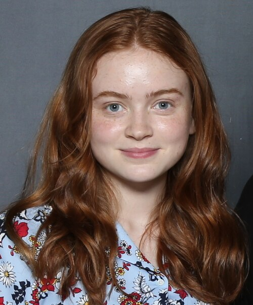
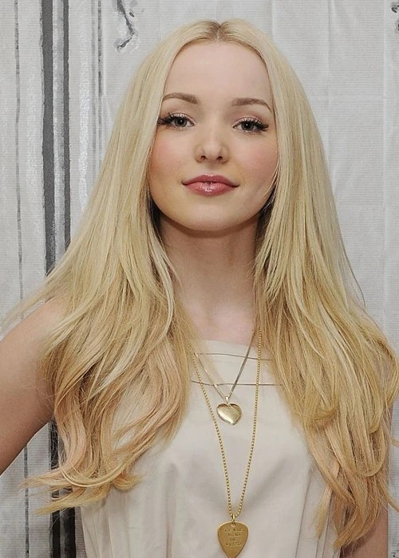

Olivia Rodrigo
Olivia Rodrigo é uma cantora e atriz americana conhecida pelo álbum "SOUR" e pela música "drivers license". Também participou da série "High School Musical: The Musical: The Series".
Blackpink - Rosé
Rosé é uma das integrantes do grupo de K-pop Blackpink. Destaca-se por sua voz marcante e lançou músicas solo como "On The Ground".
Sadie Sink
Sadie Sink é uma atriz conhecida por interpretar Max em "Stranger Things". Também atuou em filmes como "The Whale" e "Fear Street".
Dove Cameron
Dove Cameron é atriz e cantora famosa por "Liv e Maddie" e "Descendentes". Também tem uma carreira musical com hits como "Boyfriend".